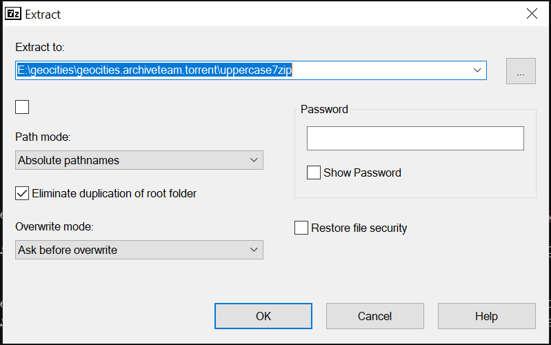
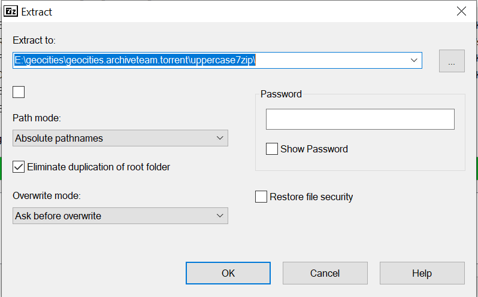

An ancient (2010) torrent of even more ancient websites. In 2009, the Archive Team scraped this data from Geocities before Yahoo! shut it down on Oct 26th, 2009. You can read more about the project to archive the data here, and you can torrent all of this yourself here.
Note to self - the original torrent description implied to me that oocities and reocities use this same data set, but the Archive Team's wiki page says they all have different data sets. Something to look into once all this data is processed?
The Archive Team also provides some scripts to help parse the contents of the torrent, but I didn't discover them until after I'd already unpacked and sorted the torrent contents. The torrent includes scripts, but not any of these scripts - the git repo is much better documented too. But the scripts are also a decade+ old, and make use of some database backup that I don't fully understand the reasoning behind - maybe the limitations of machines in that era? Personal choice? See this script for an example of what I mean. Anyway, it has some valuable info on filename cleanup I'll use later. Here's how I ended up making sense of all of this data!
The original torrent contains a few directories. To quote the README file:
Inside this torrent collection are the following directories:
MEDIA is just a quick set of press releases from Yahoo! and an mp3 interview about Archive Team and the importance of saving this digital history.
The rest are collections of .7z files. 7z is an archive format called 7ZIP. To unpack these archives, use 7zip to create... well, a bunch of large files. These large files are GNU Tar archives, which will then recreate a collection of directories related to Geocities. And then it gets weird.
As a scraper (wget) was used to get these many files, and the resulting set of data was very huge, these collections of archives were then sorted down by some rough headings. So UPPERCASE are Yahoo! IDs on geocities (something like http://www.geocities.com/DigitalHolocaust) that started with an uppercase letter. LOWERCASE are lowercase, like http://www.geocities.com/deletegeocities. NUMBERS began with numbers, like http://www.geocities.com/69convent.
WORKSHOP is our own junkbins of lists, scripts, and other tools used for getting Geocities and the URL sets we combined together with lots of google and other searches to find some seeds to grab items. Almost nobody wants this, trust us, we're just providing you what we generated along the way.
As you run scrapers, they sometimes span hosts and come out with a bunch of other sites. This is what's in SUBSITES.
Finally, GEOCITIES is the www.geocities.com site, with TONS of links over to a /geocities/YAHOOIDS directory structure that UPPERCASE, LOWERCASE, and NUMBERS created.
These were all pretty similar, and I used the same process to unpack them all. When you first open each of these directories, you'll see a ton of partial 7zip files in each. In 7zip, select all of them, then extract everything using the following settings
I ended up auto-renaming most of the files that conflicted because I'm a data hoarder, and I was seeing quite a few conflicts - still not sure the cause of that. If reproducing, I would set it to auto-rename. I unpacked all of these separate directories into their own new 7zip directory - 'uppercase7zip', 'lowercase7zip', 'numbers7zip' respectively - but you could unpack them into the same dir. All these files unpack into even more files that need to be unpacked again. Select everything in the directory in the 7zip app, and unpack it all again, using the following settings.
A few notes on unpacking:
Anyway, this unpacks into a directory structure like
E:\geocities\geocities.archiveteam.torrent\uppercase7zip\geocities\YAHOOIDS\{first_letter}\{second_letter}
where {first_letter} and {second_letter} are the first two letters of the Yahoo! ID OR neighborhood name.
From there, there's a series of subdirectories that will be one of the following:
A note on the neighborhood affiliated sites in this collection - as far as I can tell, these are sites that were made before Yahoo acquired Geocities and required everyone to have a Yahoo ID, but this is just my hunch - I am not sure yet. I've manually pulled a list of neighborhoods from reocities referenced above, and those will be dumped into a separate directory so I can dig through their contents separately as well. I do notice that all of the referenced sites hosting old geocities pages only seem to have sites organized by neighborhood, not Yahoo ID - I wonder if that's a difference in how they prioritized what to back up, or if each YahooID site also has an affiliated neighborhood. Something to look into - and if you're by some miracle reading this, aren't me, and know the answer - email me!
Anyway, I want to sort this into two directories - one containing all YahooId dirs at the base level, and one containing all neighborhoods at the base level. If you want to see how I did that, here's the script.